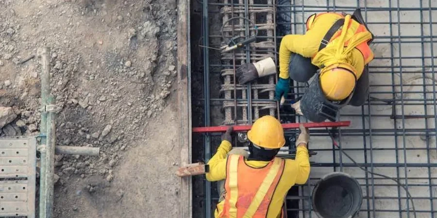

Our firm provides comprehensive geotechnical services across the Las Vegas Valley, supporting projects from the Strip to suburban developments. We offer site characterization, subsurface investigation, foundation design, and construction monitoring tailored to the region's unique arid environment. By integrating local geological knowledge with advanced testing, we deliver reliable, code-compliant solutions for commercial, residential, and infrastructure projects. Our approach emphasizes thorough assessment of soil behavior and groundwater conditions, ensuring safe and efficient designs. For specialized analyses such as seismic amplification and soil erosion, we combine field expertise with calibrated lab equipment to meet project-specific needs.

Service characteristics in Las Vegas
Demonstration video
Critical ground factors in Las Vegas
Our team brings consolidated regional experience in Las Vegas, having worked extensively with the local geology—from alluvial fans to caliche layers. We operate a calibrated laboratory for index and strength testing, ensuring accurate soil parameters for design. Our engineers coordinate closely with Clark County building departments and local contractors to streamline permitting and construction. By applying relevant ASTM and ASCE standards, we deliver code-compliant reports that support efficient foundation solutions. Whether for high-rise towers or single-family homes, we adapt our investigation methods to the specific conditions of each site, including techniques like vibrocompaction design where loose sands are encountered.
Our services
Frequently asked questions
What are the most common geotechnical challenges for construction in Las Vegas?
The main challenges include collapsible soils (which can settle when wetted), caliche layers that complicate excavation, and variable groundwater depths. Near the Wash, high water tables require dewatering considerations. Additionally, seismic site effects from deep alluvial basins can amplify ground motion, so site-specific response analyses are often needed for larger projects.
How deep should a foundation be in Las Vegas to avoid collapsible soil issues?
Typically, foundations bear on competent strata below the active zone of collapsible soils, which can extend 10–20 feet in some areas. Our subsurface investigations identify the depth of problematic layers using soil sampling and laboratory collapse testing. Depending on the project, we may recommend over-excavation and recompaction, or deep foundations to reach stable alluvium or bedrock.
What building codes and standards apply to geotechnical work in Las Vegas?
Nevada adopts the International Building Code (IBC 2021) with local amendments. Seismic design follows ASCE 7-22, using site class determined by shear wave velocity measurements. Soil testing adheres to ASTM standards, and foundation design references ACI 318. Clark County may also require specific geotechnical report formats and peer reviews for large or critical facilities.
Do I need a geotechnical report for a small residential project in Las Vegas?
While not always mandatory for single-family homes on stable lots, a geotechnical report is highly recommended to identify collapsible soils, caliche depth, and bearing capacity. Many local lenders and builders require one for warranty purposes. For additions or hillside sites, reports are typically required by the county to ensure safe foundation design and drainage.